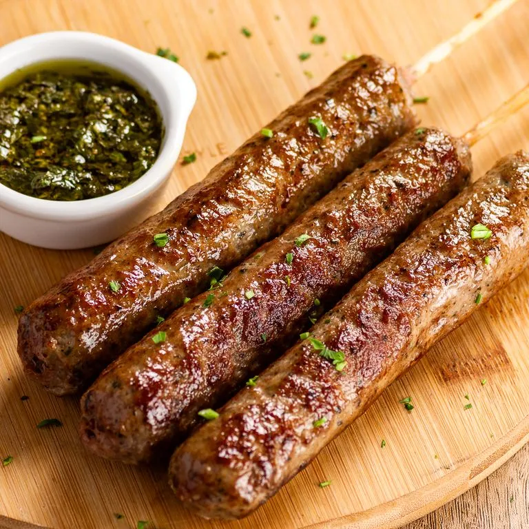
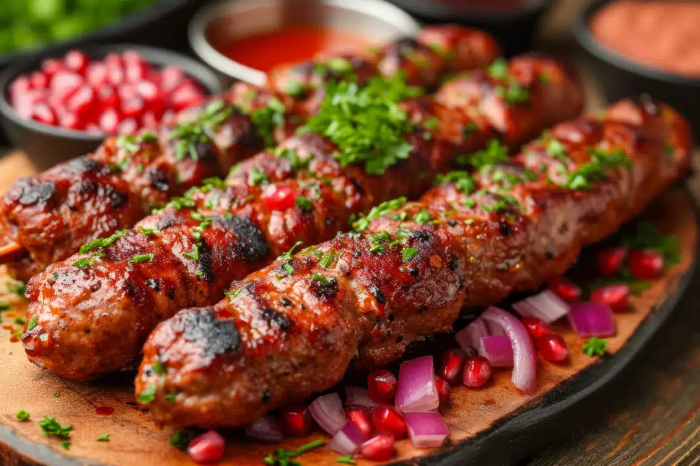

Receitas
Kafta


Ingredientes (10 Porções)
- • 1 kg de carne moída duas vezes (coxão mole ou duro)
- • 3 colheres de sopa bem cheias de cebola picada
- • 1 colher de chá rasa de sal ou a gosto
- • 3 colheres de sopa de cheiro verde picado
- • Palitos para churrasco
- • óleo para untar a carne, enquanto assa
Modo de Preparo (30 Min)
- • Misture a carne com os demais ingredientes e forme uma massa.
- • Se houver necessidade, isto é, se a massa ficar muito molhada, adicione um pouco de farinha de trigo.
- • Divida a carne em 12 ou 15 porções.
- • Pegue cada porção e espalhe - a pelo espeto, comprimindo para aderir bem.
- • Deve parecer uma salsicha espetada no sentido do comprimento.
- • Asse sobre uma grelha, virando de vez em quando, para assar por igual e ficar dourada por fora.